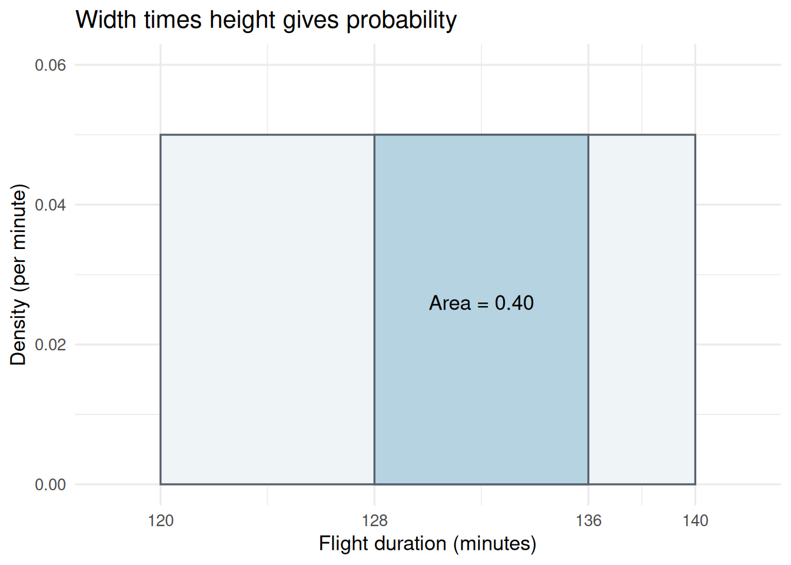
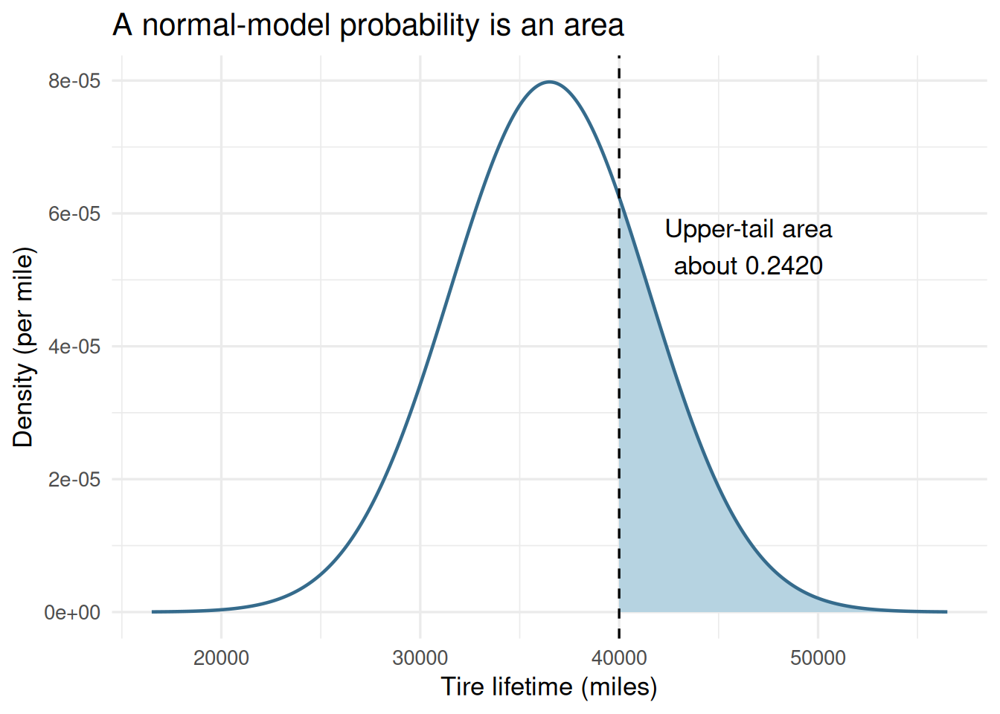

# library(): loads a package so its functions can be used in this session.
# theme_set(): sets the default theme for subsequent ggplot charts in this R session.
# theme_minimal(): uses a minimal chart style; base_size controls the base text size in points.
# Load chart/table tools; the examples below use parameters stated in the textbook.
# seq() creates plotting grids only; these grids are not observed flight or tire records.
library(ggplot2)
library(knitr)
theme_set(theme_minimal(base_size = 13))Module 3: Continuous Distributions
Lesson 5 | Read areas, tails, and quantiles
What we will learn
A continuous model assigns probabilities to intervals through area under a density curve. We use the uniform distribution to make area concrete, then the normal distribution to calculate tails and choose a cutoff.
By the end, you should be able to distinguish density from probability, standardize a normal value, calculate interval and tail probabilities, and invert a cumulative probability to find a quantile.
Reading: main textbook, §6.1, printed pp.275–277, and §6.2, pp.279–290. The exponential distribution (§6.3, pp.293–298) is optional follow-up reading and is not developed in this selected sequence.
Business case: a flight-time interval
The textbook models a flight from Chicago to New York with duration between 120 and 140 minutes, assigning equal probability to intervals of equal length within those bounds. If \(T\) is the duration of one flight in minutes, what is the probability that \(128\leq T\leq136\)? This is the book’s uniform model; individual flight measurements are not supplied here.
يستخدم الكتاب نموذجًا لمدة رحلة جوية من شيكاغو إلى نيويورك، بحيث تقع المدة بين 120 و140 دقيقة، وتتساوى احتمالات الفترات المتساوية في الطول داخل هذين الحدّين. إذا كان \(T\) مدة رحلة واحدة بالدقائق، فما احتمال أن تكون المدة بين 128 و136 دقيقة؟ هذا هو النموذج المنتظم المعطى في الكتاب؛ ولا تتوافر هنا قياسات الرحلات الفردية.
Probability is area, not height
For a continuous variable with density \(f(t)\):
- The density is nonnegative and its total area is 1.
- \(P(a\leq T\leq b)\) is the area under the density between \(a\) and \(b\).
- \(P(T=t)=0\) at any single exact point in a continuous model.
- Consequently, including or excluding an endpoint does not change a continuous interval probability.
The density height can exceed 1 if the distribution is concentrated in a narrow interval. It has units inverse to the variable, such as per minute; the resulting area is a unit-free probability.
For \(T\sim\operatorname{Uniform}(120,140)\), the density is \(1/(140-120)=0.05\) per minute inside the bounds and zero outside them. Therefore,
\[P(128\leq T\leq136)=(136-128)\times0.05=0.40.\]
# kable(): formats a data frame or matrix as a readable report table; digits sets displayed precision.
# data.frame(): builds a table whose named columns have compatible lengths.
# c(): combines values into a vector, converting them to a common type when needed.
# punif(t,min,max) gives P(T<=t); subtract cumulative areas for the requested interval.
# dunif() returns density height, whereas an exact point has zero continuous probability.
flight_probability <- punif(136, min = 120, max = 140) - punif(128, min = 120, max = 140)
kable(data.frame(Quantity = c("Density at 130 (per minute)", "Probability from 128 to 136", "Probability at exactly 130"),
Value = c(dunif(130, 120, 140), flight_probability, 0)), digits = 4)| Quantity | Value |
|---|---|
| Density at 130 (per minute) | 0.05 |
| Probability from 128 to 136 | 0.40 |
| Probability at exactly 130 | 0.00 |
# ggplot(): starts a plot from data; additional layers are joined with +.
# aes(): maps variables to visual properties such as x, y, fill, color, or group.
# annotate(): adds a fixed plot annotation rather than mapping one label per data row.
# scale_x_continuous(): controls numeric x-axis breaks, labels, limits, and spacing.
# c(): combines values into a vector, converting them to a common type when needed.
# scale_y_continuous(): controls numeric y-axis breaks, labels, limits, and spacing.
# labs(): sets axis titles, legend titles, plot titles, and captions.
# The rectangle height is 1/20 per minute; its highlighted width is eight minutes.
# geom_rect() draws model areas, not histogram bars or recorded flights.
ggplot() +
geom_rect(aes(xmin = 120, xmax = 140, ymin = 0, ymax = .05), fill = "#EFF4F7", color = "#56616D") +
geom_rect(aes(xmin = 128, xmax = 136, ymin = 0, ymax = .05), fill = "#B6D3E1", color = "#56616D") +
annotate("text", x = 132, y = .026, label = "Area = 0.40") +
scale_x_continuous(breaks = c(120, 128, 136, 140), limits = c(118, 142)) +
scale_y_continuous(limits = c(0, .06)) +
labs(x = "Flight duration (minutes)", y = "Density (per minute)",
title = "Width times height gives probability")
Original R illustration calculated from the uniform flight-time model, textbook pp.275–277.
A recorded duration of “130 minutes” may represent a rounded interval, not the exact mathematical point 130. For example, nearest-minute rounding could correspond to \(129.5\leq T<130.5\), which has positive probability. Recording precision and the underlying continuous variable are different concepts.
The normal model and standardization
A normal distribution is symmetric and bell-shaped. Its parameters are the mean \(\mu\) and SD \(\sigma>0\). We write \(X\sim N(\mu,\sigma^2)\); the second quantity in this notation is variance, but R’s sd argument requires standard deviation.
Standardization expresses a value in SD units:
\[Z=\frac{X-\mu}{\sigma},\qquad Z\sim N(0,1).\]
This connects to Module 2’s z-scores. A standardized score alone does not make an arbitrary variable normally distributed. Normal tail calculations require a normal model to be reasonable.
Business case: Grear tire lifetimes
Grear Tire Company considers a mileage guarantee for a new steel-belted radial tire. The textbook reports an estimated mean lifetime of 36,500 miles and SD 5,000 miles, and treats a normal distribution as reasonable. What proportion lasts more than 40,000 miles? What mileage cutoff places 10% of lifetimes below it? The variable is lifetime in miles for one tire. The raw road-test observations are not available here, so we use the stated model rather than independently checking its fit.
تدرس شركة Grear Tire Company ضمانًا لعدد الأميال لإطار شعاعي جديد مدعّم بالفولاذ. يذكر الكتاب متوسط عمر مقدّرًا قدره 36,500 ميل وانحرافًا معياريًا قدره 5,000 ميل، ويعدّ التوزيع الطبيعي نموذجًا معقولًا. ما نسبة الإطارات التي يتجاوز عمرها 40,000 ميل؟ وما حدّ الأميال الذي يقع 10% من الأعمار دونه؟ المتغير هو عمر إطار واحد بالأميال. لا تتوافر هنا مشاهدات اختبارات الطريق الأصلية، لذا نستخدم النموذج المعطى دون التحقق من ملاءمته بصورة مستقلة.
Calculate a tail or an interval
For 40,000 miles,
\[z=\frac{40{,}000-36{,}500}{5{,}000}=0.70.\]
# c(): combines values into a vector, converting them to a common type when needed.
# kable(): formats a data frame or matrix as a readable report table; digits sets displayed precision.
# data.frame(): builds a table whose named columns have compatible lengths.
# names(): reads or assigns names to vector elements or table columns.
# unname(): removes names or dimension names without changing the underlying values.
# stopifnot(): stops execution if any supplied condition is FALSE; successful checks produce no output.
# abs(): returns absolute values; a small tolerance in an equality check permits floating-point rounding.
# pnorm() returns a lower-tail area; lower.tail=FALSE directly returns the upper-tail area.
# sd=5000 supplies SD in miles, not variance; subtract two CDF values for an interval.
mu <- 36500
sigma <- 5000
z <- (40000 - mu) / sigma
normal_answers <- c("More than 40,000 miles" = pnorm(40000, mean = mu, sd = sigma, lower.tail = FALSE),
"20,000 to 40,000 miles" = pnorm(40000, mu, sigma) - pnorm(20000, mu, sigma))
kable(data.frame(Event = names(normal_answers), Probability = unname(normal_answers)), digits = 4)| Event | Probability |
|---|---|
| More than 40,000 miles | 0.2420 |
| 20,000 to 40,000 miles | 0.7576 |
stopifnot(abs(pnorm(z, lower.tail = FALSE) - normal_answers[1]) < 1e-12)About 24.20% exceed 40,000 miles under the stated model. The probability is an area; dnorm(40000, ...) would give a density height, not this tail probability.
# data.frame(): builds a table whose named columns have compatible lengths.
# sort(): sorts values; decreasing=TRUE reverses the default ascending order.
# unique(): keeps distinct values or rows in first-occurrence order.
# c(): combines values into a vector, converting them to a common type when needed.
# seq(): creates an equally spaced sequence; by sets spacing and length.out sets the number of values.
# ggplot(): starts a plot from data; additional layers are joined with +.
# aes(): maps variables to visual properties such as x, y, fill, color, or group.
# geom_area(): fills the area between a curve and zero.
# subset(): keeps entries or rows satisfying a condition; select can choose columns.
# geom_line(): joins observations in x order; group determines which observations form each line.
# geom_vline(): adds vertical references at xintercept; linetype selects solid or dashed lines.
# annotate(): adds a fixed plot annotation rather than mapping one label per data row.
# labs(): sets axis titles, legend titles, plot titles, and captions.
# dnorm() evaluates density on a plotting grid; shading identifies the upper-tail event.
# The plotted range is finite although the normal distribution extends indefinitely.
curve_data <- data.frame(Miles = sort(unique(c(40000,
seq(mu - 4 * sigma, mu + 4 * sigma, length.out = 1001)))))
curve_data$Density <- dnorm(curve_data$Miles, mean = mu, sd = sigma)
ggplot(curve_data, aes(Miles, Density)) +
geom_area(data = subset(curve_data, Miles >= 40000), fill = "#B6D3E1") +
geom_line(color = "#356B8C", linewidth = .8) +
geom_vline(xintercept = 40000, linetype = "dashed") +
annotate("text", x = 46500, y = .000055, label = "Upper-tail area\nabout 0.2420") +
labs(x = "Tire lifetime (miles)", y = "Density (per mile)",
title = "A normal-model probability is an area")
Original R model plot using the Grear parameters checked on textbook p.286. It is not a histogram of raw tire lifetimes.
Invert the question: a quantile
Now the probability is given and the cutoff is unknown. A 10th percentile \(c\) satisfies \(P(X\leq c)=0.10\).
# kable(): formats a data frame or matrix as a readable report table; digits sets displayed precision.
# data.frame(): builds a table whose named columns have compatible lengths.
# c(): combines values into a vector, converting them to a common type when needed.
# qnorm(p,...) returns the value whose lower-tail probability is p.
# Verify the result by putting the cutoff back into pnorm(); probability and miles are different outputs.
cutoff <- qnorm(.10, mean = mu, sd = sigma)
round_cutoff <- 30000
kable(data.frame(Quantity = c("10th percentile (miles)", "Probability below exact cutoff", "Probability below 30,000 miles"),
Value = c(cutoff, pnorm(cutoff, mu, sigma), pnorm(round_cutoff, mu, sigma))), digits = 4)| Quantity | Value |
|---|---|
| 10th percentile (miles) | 30092.2422 |
| Probability below exact cutoff | 0.1000 |
| Probability below 30,000 miles | 0.0968 |
The unrounded 10th percentile is about 30,092 miles. The book’s approximately 30,100-mile result uses a rounded z-table value; R calculates the quantile more precisely. A practical cutoff of 30,000 miles implies a lower-tail probability of about 9.68%, under this model. A lifetime probability does not by itself determine a business policy: costs and other relevant evidence would also be needed.
The normal model permits negative values mathematically. For this particular parameter combination, the negative-lifetime tail is negligible, but a normal model is not automatically appropriate for nonnegative, strongly skewed measurements. Do not replace an empirical shape check with the claim that every numerical variable is normal.
A function guide after the concepts
The prefixes d, p, q, and r identify density or mass, cumulative probability, quantile, and random draws, respectively. Choose the output that answers the question.
| Task | Discrete binomial example | Continuous normal example |
|---|---|---|
| Mass at a count / density at a value | dbinom(x, size, prob) gives \(P(X=x)\) |
dnorm(x, mean, sd) gives a height |
| Probability up to a value | pbinom(k, size, prob) |
pnorm(t, mean, sd) |
| Cutoff for a lower-tail probability | qbinom(p, size, prob) |
qnorm(p, mean, sd) |
| Artificial model draws | rbinom(n, size, prob) |
rnorm(n, mean, sd) |
A discrete quantile is the smallest supported value whose cumulative probability reaches or exceeds the requested probability; an exact probability match may not exist. For continuous normal quantiles, the CDF equals the requested probability apart from numerical precision.
Complete Lesson 5 practice and the integrated review. Module 4 will distinguish an individual observation’s distribution from the sampling distribution of a statistic; its lessons and practice are available.
Sources and limits
Anderson et al. (2020), 8th ed., §6.1, pp.275–277, and §6.2, pp.279–290; Grear setting and parameters, pp.286–288. Bounds, units, mean, SD, tail question, and guarantee percentile were checked against the local PDF. All charts are computed model illustrations. No flight records or tire measurements were invented, and no new workbook-to-CSV conversion is implied.